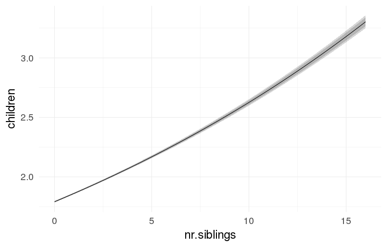
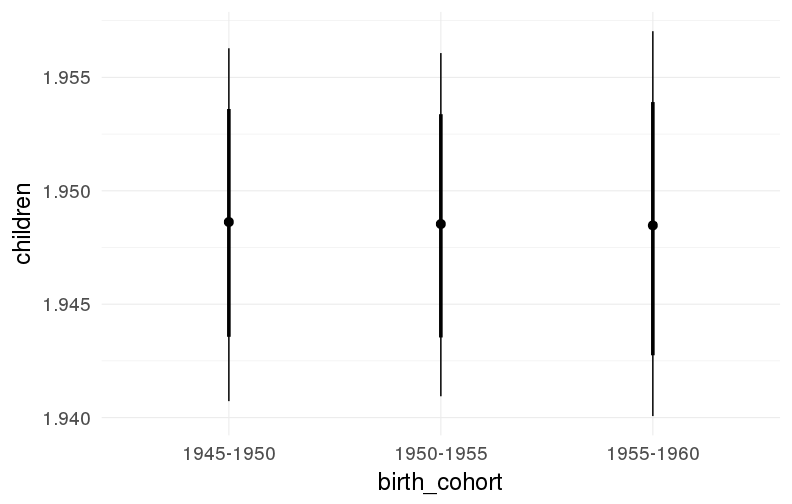
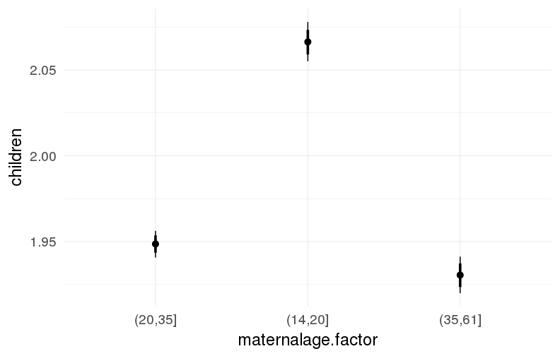
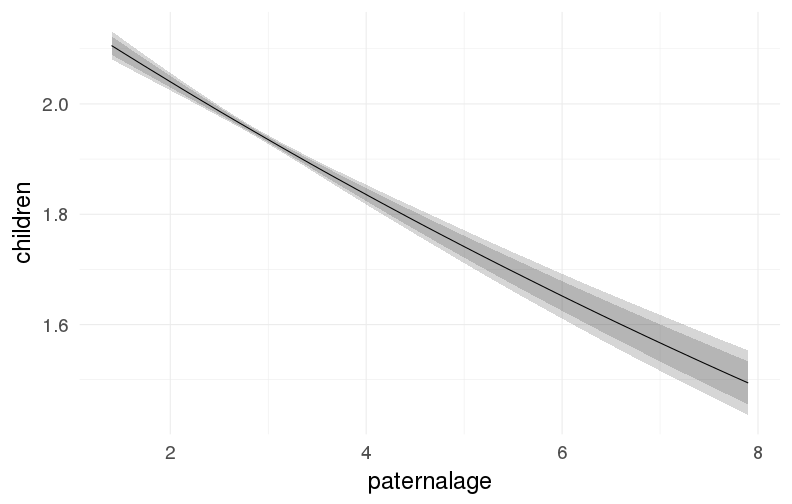
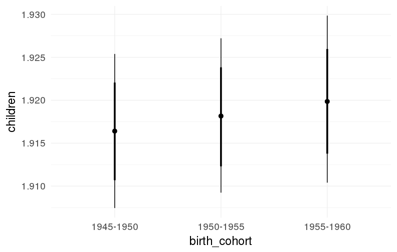
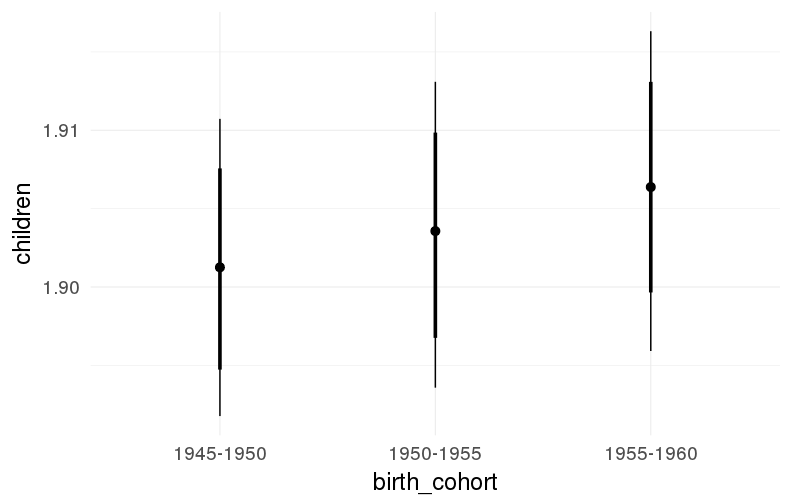
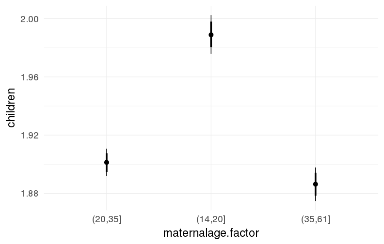

Sweden (1947-2000), main models
Loading details
source("0__helpers.R")
opts_chunk$set(warning=TRUE, cache=F,tidy=FALSE,dev=c('png'),fig.width=20,fig.height=12.5)
make_path = function(file) {
get_coefficient_path(file, "swed")
}
# options for each chunk calling knit_child
opts_chunk$set(warning=FALSE, message = FALSE, echo = FALSE)Analysis description
Data subset
The swed_subset_survival.1 dataset contains only those participants where paternal age is known and birth years are from 1969 to 2000. We use it for the analyses pertaining to survival. We randomly sampled 100,000 families from the whole dataset.
The swed.1 dataset contains all those participants where paternal age is known and birth years are from 1947 to 1959. We use it for the analyses pertaining to marriage, divorce and reproductive success.
Model description
All of the following models have the following in common:
Estimation
We fit all models using brms v. 1.2.0, a Bayesian regression analysis statistical package. brms uses Stan, a probabilistic programming langugage to fit models using Hamiltonian Monte Carlo.
Covariates
In our main models we adjust for average paternal age in the family, birth cohort (birth years in five equally large bins), for male sex, for age at paternal and maternal loss (0-1, 2-5, 6-10, …, 41-45, 45+, unknown), for maternal age (bins of 14-20, 20-35 and 35-50), for the number of siblings, for the number of older siblings (0-5, 5+) and for being last born.
Model stratification
We added random intercepts for each family (father-mother dyad). We then controlled for the average paternal age in the family. Hence, the paternal age effects in the plot are split into those between families and those within families or between siblings. We are interested in the effect of paternal age between siblings, as this effect cannot be explained by e.g. genetic propensities of the father to reproduce late.
m1: No sibling comparison
Here, we ignore the pedigree structure of the data to see whether it matters for the estimation of the paternal age effect.
Model summary
Full summary
model_summary = summary(model, use_cache = FALSE, priors = TRUE)
print(model_summary)## Family: poisson (log)
## Formula: children ~ paternalage + birth_cohort + male + maternalage.factor + paternal_loss + maternal_loss + older_siblings + nr.siblings + last_born
## Data: model_data (Number of observations: 1408177)
## Samples: 6 chains, each with iter = 800; warmup = 300; thin = 1;
## total post-warmup samples = 3000
## WAIC: Not computed
##
## Priors:
## b ~ normal(0,5)
##
## Population-Level Effects:
## Estimate Est.Error l-95% CI u-95% CI Eff.Sample
## Intercept 0.73 0.00 0.72 0.74 3000
## paternalage -0.05 0.00 -0.05 -0.04 3000
## birth_cohort1950M1955 0.00 0.00 0.00 0.00 3000
## birth_cohort1955M1960 0.00 0.00 0.00 0.01 3000
## male1 -0.06 0.00 -0.07 -0.06 3000
## maternalage.factor1420 0.06 0.00 0.05 0.06 3000
## maternalage.factor3561 0.00 0.00 -0.01 0.00 3000
## paternal_loss01 0.11 0.05 0.00 0.22 1327
## paternal_loss15 0.03 0.02 0.00 0.07 1893
## paternal_loss510 -0.02 0.01 -0.03 0.00 2062
## paternal_loss1015 0.00 0.01 -0.01 0.01 3000
## paternal_loss1520 0.00 0.00 0.00 0.01 3000
## paternal_loss2025 0.00 0.00 -0.01 0.00 3000
## paternal_loss2530 0.00 0.00 0.00 0.01 3000
## paternal_loss3035 0.00 0.00 0.00 0.00 3000
## paternal_loss3540 0.00 0.00 -0.01 0.00 3000
## paternal_loss4045 -0.01 0.00 -0.01 0.00 3000
## paternal_lossunclear -0.06 0.00 -0.06 -0.05 3000
## maternal_loss01 -0.20 0.07 -0.34 -0.06 1665
## maternal_loss15 -0.06 0.03 -0.11 0.00 1497
## maternal_loss510 -0.01 0.01 -0.04 0.02 1759
## maternal_loss1015 -0.01 0.01 -0.02 0.01 2587
## maternal_loss1520 0.00 0.01 -0.02 0.01 2838
## maternal_loss2025 0.01 0.00 0.00 0.02 3000
## maternal_loss2530 0.01 0.00 0.00 0.01 3000
## maternal_loss3035 0.01 0.00 0.00 0.01 3000
## maternal_loss3540 0.00 0.00 -0.01 0.00 3000
## maternal_loss4045 0.00 0.00 -0.01 0.01 3000
## maternal_lossunclear -0.02 0.00 -0.02 -0.02 3000
## older_siblings1 0.02 0.00 0.01 0.02 3000
## older_siblings2 0.02 0.00 0.01 0.02 3000
## older_siblings3 0.01 0.00 0.00 0.02 3000
## older_siblings4 -0.01 0.00 -0.02 0.00 3000
## older_siblings5P -0.06 0.01 -0.07 -0.05 2350
## nr.siblings 0.04 0.00 0.04 0.04 2470
## last_born1 0.01 0.00 0.01 0.01 3000
## Rhat
## Intercept 1
## paternalage 1
## birth_cohort1950M1955 1
## birth_cohort1955M1960 1
## male1 1
## maternalage.factor1420 1
## maternalage.factor3561 1
## paternal_loss01 1
## paternal_loss15 1
## paternal_loss510 1
## paternal_loss1015 1
## paternal_loss1520 1
## paternal_loss2025 1
## paternal_loss2530 1
## paternal_loss3035 1
## paternal_loss3540 1
## paternal_loss4045 1
## paternal_lossunclear 1
## maternal_loss01 1
## maternal_loss15 1
## maternal_loss510 1
## maternal_loss1015 1
## maternal_loss1520 1
## maternal_loss2025 1
## maternal_loss2530 1
## maternal_loss3035 1
## maternal_loss3540 1
## maternal_loss4045 1
## maternal_lossunclear 1
## older_siblings1 1
## older_siblings2 1
## older_siblings3 1
## older_siblings4 1
## older_siblings5P 1
## nr.siblings 1
## last_born1 1
##
## Samples were drawn using sampling(NUTS). For each parameter, Eff.Sample
## is a crude measure of effective sample size, and Rhat is the potential
## scale reduction factor on split chains (at convergence, Rhat = 1).Table of fixed effects
fixed_eff = data.frame(model_summary$fixed, check.names = F)
fixed_eff$Est.Error = fixed_eff$Eff.Sample = fixed_eff$Rhat = NULL
fixed_eff$OR = exp(fixed_eff$Estimate)
fixed_eff$OR_low = exp(fixed_eff$`l-95% CI`)
fixed_eff$OR_high = exp(fixed_eff$`u-95% CI`)
pander::pander(fixed_eff)| Estimate | l-95% CI | u-95% CI | OR | OR_low | OR_high | |
|---|---|---|---|---|---|---|
| Intercept | 0.7324 | 0.7238 | 0.741 | 2.08 | 2.062 | 2.098 |
| paternalage | -0.04706 | -0.04951 | -0.04454 | 0.954 | 0.9517 | 0.9564 |
| birth_cohort1950M1955 | 0.0007506 | -0.002472 | 0.003975 | 1.001 | 0.9975 | 1.004 |
| birth_cohort1955M1960 | 0.001589 | -0.001701 | 0.005026 | 1.002 | 0.9983 | 1.005 |
| male1 | -0.06361 | -0.06598 | -0.06126 | 0.9384 | 0.9361 | 0.9406 |
| maternalage.factor1420 | 0.05691 | 0.0522 | 0.06142 | 1.059 | 1.054 | 1.063 |
| maternalage.factor3561 | -0.00131 | -0.005571 | 0.002988 | 0.9987 | 0.9944 | 1.003 |
| paternal_loss01 | 0.114 | 0.002498 | 0.2187 | 1.121 | 1.003 | 1.244 |
| paternal_loss15 | 0.0314 | -0.004265 | 0.06798 | 1.032 | 0.9957 | 1.07 |
| paternal_loss510 | -0.01675 | -0.03403 | 0.0008674 | 0.9834 | 0.9665 | 1.001 |
| paternal_loss1015 | -0.003914 | -0.0146 | 0.006414 | 0.9961 | 0.9855 | 1.006 |
| paternal_loss1520 | 0.004768 | -0.003012 | 0.01275 | 1.005 | 0.997 | 1.013 |
| paternal_loss2025 | -0.001746 | -0.00844 | 0.004828 | 0.9983 | 0.9916 | 1.005 |
| paternal_loss2530 | 0.003258 | -0.001987 | 0.008665 | 1.003 | 0.998 | 1.009 |
| paternal_loss3035 | 0.0002228 | -0.004601 | 0.004953 | 1 | 0.9954 | 1.005 |
| paternal_loss3540 | -0.003974 | -0.008541 | 0.0003649 | 0.996 | 0.9915 | 1 |
| paternal_loss4045 | -0.008584 | -0.01299 | -0.004322 | 0.9915 | 0.9871 | 0.9957 |
| paternal_lossunclear | -0.05531 | -0.05867 | -0.05186 | 0.9462 | 0.943 | 0.9495 |
| maternal_loss01 | -0.1959 | -0.3429 | -0.05812 | 0.8221 | 0.7097 | 0.9435 |
| maternal_loss15 | -0.05531 | -0.1132 | -0.0001841 | 0.9462 | 0.893 | 0.9998 |
| maternal_loss510 | -0.009533 | -0.03653 | 0.01708 | 0.9905 | 0.9641 | 1.017 |
| maternal_loss1015 | -0.006085 | -0.02159 | 0.009571 | 0.9939 | 0.9786 | 1.01 |
| maternal_loss1520 | -0.00468 | -0.01746 | 0.006948 | 0.9953 | 0.9827 | 1.007 |
| maternal_loss2025 | 0.008751 | -0.001207 | 0.01849 | 1.009 | 0.9988 | 1.019 |
| maternal_loss2530 | 0.00568 | -0.002706 | 0.01384 | 1.006 | 0.9973 | 1.014 |
| maternal_loss3035 | 0.005608 | -0.001537 | 0.01246 | 1.006 | 0.9985 | 1.013 |
| maternal_loss3540 | -0.003965 | -0.009709 | 0.001744 | 0.996 | 0.9903 | 1.002 |
| maternal_loss4045 | -0.0006131 | -0.006377 | 0.005184 | 0.9994 | 0.9936 | 1.005 |
| maternal_lossunclear | -0.0204 | -0.02348 | -0.01729 | 0.9798 | 0.9768 | 0.9829 |
| older_siblings1 | 0.01541 | 0.01239 | 0.01836 | 1.016 | 1.012 | 1.019 |
| older_siblings2 | 0.01884 | 0.01459 | 0.02317 | 1.019 | 1.015 | 1.023 |
| older_siblings3 | 0.01066 | 0.004143 | 0.01705 | 1.011 | 1.004 | 1.017 |
| older_siblings4 | -0.005764 | -0.01521 | 0.003415 | 0.9943 | 0.9849 | 1.003 |
| older_siblings5P | -0.06164 | -0.07247 | -0.05062 | 0.9402 | 0.9301 | 0.9506 |
| nr.siblings | 0.03829 | 0.03718 | 0.03936 | 1.039 | 1.038 | 1.04 |
| last_born1 | 0.01138 | 0.008642 | 0.01416 | 1.011 | 1.009 | 1.014 |
Paternal age effect
pander::pander(paternal_age_10y_effect(model))| effect | median_estimate | ci_95 | ci_80 |
|---|---|---|---|
| estimate father 25y | 1.92 | [1.91;1.93] | [1.92;1.93] |
| estimate father 35y | 1.83 | [1.83;1.84] | [1.83;1.84] |
| percentage change | -4.6 | [-4.83;-4.36] | [-4.75;-4.44] |
| OR/IRR | 0.95 | [0.95;0.96] | [0.95;0.96] |
Marginal effect plots
plot.brmsMarginalEffects_shades(
x = marginal_effects(model, re_formula = NA, probs = c(0.025,0.975)),
y = marginal_effects(model, re_formula = NA, probs = c(0.1,0.9)),
ask = FALSE)
Coefficient plot
Coefficient estimates (95% and 80% credibility).
mcmc_intervals(as.matrix(model$fit), regex_pars = "b_[^I]")plot of chunk unnamed-chunk-12
mcmc_areas(as.matrix(model$fit), regex_pars = "b")plot of chunk unnamed-chunk-12
Diagnostics
These plots were made to diagnose misfit and nonconvergence.
Posterior predictive checks
brms::pp_check(model, re_formula = NA, type = "dens_overlay")plot of chunk unnamed-chunk-13
brms::pp_check(model, re_formula = NA, type = "hist")plot of chunk unnamed-chunk-13
Rhat
Did the 6 chains converge?
stanplot(model, pars = "^b_[^I]", type = 'rhat')plot of chunk unnamed-chunk-14
Effective sample size by average sample size
stanplot(model, pars = "^b", type = 'ess')plot of chunk unnamed-chunk-15
Monte Carlo SE
stanplot(model, pars = "^b", type = 'mcse')plot of chunk unnamed-chunk-16
Trace plots
if(any( summary(model)$fixed[,"Rhat"] > 1.1)) { # only do traceplots if not converged
plot(model, N = 3, ask = FALSE)
}Further plots
stanplot(model, pars = "^b", type = 'diag')plot of chunk unnamed-chunk-18
File name
coefs/swed/m1_children_linear_noranef.rds
Cluster script
opts_chunk$set(echo = FALSE)
clusterscript = str_replace(basename(model_filename), "\\.rds",".html")
cat("[Cluster script](" , clusterscript, ")", sep = "")m2: Sibling comparison, no paternal age effect
Here, we compared siblings by including a random intercept for the family, but we modelled no effect for paternal age differences among siblings.
Model summary
Full summary
model_summary = summary(model, use_cache = FALSE, priors = TRUE)
print(model_summary)## Family: poisson (log)
## Formula: children ~ birth_cohort + male + maternalage.factor + paternalage.mean + paternal_loss + maternal_loss + older_siblings + nr.siblings + last_born + (1 | idParents)
## Data: model_data (Number of observations: 1302856)
## Samples: 6 chains, each with iter = 800; warmup = 300; thin = 1;
## total post-warmup samples = 3000
## WAIC: Not computed
##
## Priors:
## b ~ normal(0,5)
## sd ~ student_t(3, 0, 5)
##
## Group-Level Effects:
## ~idParents (Number of levels: 835809)
## Estimate Est.Error l-95% CI u-95% CI Eff.Sample Rhat
## sd(Intercept) 0 0 0 0.01 358 1.01
##
## Population-Level Effects:
## Estimate Est.Error l-95% CI u-95% CI Eff.Sample
## Intercept 0.72 0.00 0.71 0.73 3000
## birth_cohort1950M1955 0.00 0.00 0.00 0.00 3000
## birth_cohort1955M1960 0.00 0.00 0.00 0.01 3000
## male1 -0.06 0.00 -0.06 -0.06 3000
## maternalage.factor1420 0.06 0.00 0.05 0.06 3000
## maternalage.factor3561 -0.01 0.00 -0.01 0.00 3000
## paternalage.mean -0.04 0.00 -0.05 -0.04 3000
## paternal_loss01 0.11 0.06 -0.01 0.23 3000
## paternal_loss15 0.04 0.02 -0.01 0.08 3000
## paternal_loss510 -0.02 0.01 -0.04 0.00 3000
## paternal_loss1015 -0.01 0.01 -0.02 0.00 3000
## paternal_loss1520 0.00 0.00 -0.01 0.01 3000
## paternal_loss2025 0.00 0.00 -0.01 0.00 3000
## paternal_loss2530 0.00 0.00 0.00 0.01 3000
## paternal_loss3035 0.00 0.00 -0.01 0.00 3000
## paternal_loss3540 0.00 0.00 -0.01 0.00 3000
## paternal_loss4045 -0.01 0.00 -0.01 0.00 3000
## paternal_lossunclear -0.06 0.00 -0.06 -0.05 3000
## maternal_loss01 -0.19 0.08 -0.36 -0.03 3000
## maternal_loss15 -0.06 0.03 -0.12 0.00 3000
## maternal_loss510 -0.01 0.01 -0.04 0.01 3000
## maternal_loss1015 -0.01 0.01 -0.02 0.01 3000
## maternal_loss1520 0.00 0.01 -0.02 0.01 3000
## maternal_loss2025 0.01 0.01 0.00 0.02 3000
## maternal_loss2530 0.01 0.00 0.00 0.02 3000
## maternal_loss3035 0.01 0.00 0.00 0.01 3000
## maternal_loss3540 0.00 0.00 -0.01 0.00 3000
## maternal_loss4045 0.00 0.00 -0.01 0.01 3000
## maternal_lossunclear -0.02 0.00 -0.02 -0.02 3000
## older_siblings1 0.00 0.00 0.00 0.00 3000
## older_siblings2 -0.01 0.00 -0.02 -0.01 3000
## older_siblings3 -0.03 0.00 -0.04 -0.03 3000
## older_siblings4 -0.06 0.00 -0.07 -0.05 3000
## older_siblings5P -0.13 0.01 -0.14 -0.12 3000
## nr.siblings 0.04 0.00 0.04 0.05 3000
## last_born1 0.01 0.00 0.01 0.02 3000
## Rhat
## Intercept 1
## birth_cohort1950M1955 1
## birth_cohort1955M1960 1
## male1 1
## maternalage.factor1420 1
## maternalage.factor3561 1
## paternalage.mean 1
## paternal_loss01 1
## paternal_loss15 1
## paternal_loss510 1
## paternal_loss1015 1
## paternal_loss1520 1
## paternal_loss2025 1
## paternal_loss2530 1
## paternal_loss3035 1
## paternal_loss3540 1
## paternal_loss4045 1
## paternal_lossunclear 1
## maternal_loss01 1
## maternal_loss15 1
## maternal_loss510 1
## maternal_loss1015 1
## maternal_loss1520 1
## maternal_loss2025 1
## maternal_loss2530 1
## maternal_loss3035 1
## maternal_loss3540 1
## maternal_loss4045 1
## maternal_lossunclear 1
## older_siblings1 1
## older_siblings2 1
## older_siblings3 1
## older_siblings4 1
## older_siblings5P 1
## nr.siblings 1
## last_born1 1
##
## Samples were drawn using sampling(NUTS). For each parameter, Eff.Sample
## is a crude measure of effective sample size, and Rhat is the potential
## scale reduction factor on split chains (at convergence, Rhat = 1).Table of fixed effects
fixed_eff = data.frame(model_summary$fixed, check.names = F)
fixed_eff$Est.Error = fixed_eff$Eff.Sample = fixed_eff$Rhat = NULL
fixed_eff$OR = exp(fixed_eff$Estimate)
fixed_eff$OR_low = exp(fixed_eff$`l-95% CI`)
fixed_eff$OR_high = exp(fixed_eff$`u-95% CI`)
pander::pander(fixed_eff)| Estimate | l-95% CI | u-95% CI | OR | OR_low | OR_high | |
|---|---|---|---|---|---|---|
| Intercept | 0.7229 | 0.7141 | 0.732 | 2.06 | 2.042 | 2.079 |
| birth_cohort1950M1955 | 8.876e-05 | -0.003214 | 0.003274 | 1 | 0.9968 | 1.003 |
| birth_cohort1955M1960 | 0.001881 | -0.001668 | 0.005373 | 1.002 | 0.9983 | 1.005 |
| male1 | -0.06048 | -0.0629 | -0.05799 | 0.9413 | 0.939 | 0.9437 |
| maternalage.factor1420 | 0.05978 | 0.05491 | 0.06447 | 1.062 | 1.056 | 1.067 |
| maternalage.factor3561 | -0.00837 | -0.01282 | -0.003999 | 0.9917 | 0.9873 | 0.996 |
| paternalage.mean | -0.04374 | -0.04634 | -0.04114 | 0.9572 | 0.9547 | 0.9597 |
| paternal_loss01 | 0.1125 | -0.01448 | 0.2339 | 1.119 | 0.9856 | 1.263 |
| paternal_loss15 | 0.0378 | -0.007649 | 0.08195 | 1.039 | 0.9924 | 1.085 |
| paternal_loss510 | -0.02129 | -0.04004 | -0.00204 | 0.9789 | 0.9608 | 0.998 |
| paternal_loss1015 | -0.007866 | -0.01826 | 0.00279 | 0.9922 | 0.9819 | 1.003 |
| paternal_loss1520 | 0.002926 | -0.005314 | 0.01097 | 1.003 | 0.9947 | 1.011 |
| paternal_loss2025 | -0.002795 | -0.009592 | 0.00386 | 0.9972 | 0.9905 | 1.004 |
| paternal_loss2530 | 0.001441 | -0.004257 | 0.00691 | 1.001 | 0.9958 | 1.007 |
| paternal_loss3035 | -0.001797 | -0.006737 | 0.003132 | 0.9982 | 0.9933 | 1.003 |
| paternal_loss3540 | -0.004496 | -0.009237 | 0.0001079 | 0.9955 | 0.9908 | 1 |
| paternal_loss4045 | -0.008846 | -0.0135 | -0.00418 | 0.9912 | 0.9866 | 0.9958 |
| paternal_lossunclear | -0.05516 | -0.05886 | -0.05175 | 0.9463 | 0.9428 | 0.9496 |
| maternal_loss01 | -0.1863 | -0.357 | -0.03132 | 0.8301 | 0.6998 | 0.9692 |
| maternal_loss15 | -0.05999 | -0.1242 | 0.003386 | 0.9418 | 0.8832 | 1.003 |
| maternal_loss510 | -0.01332 | -0.04142 | 0.0141 | 0.9868 | 0.9594 | 1.014 |
| maternal_loss1015 | -0.007267 | -0.02384 | 0.008789 | 0.9928 | 0.9764 | 1.009 |
| maternal_loss1520 | -0.003604 | -0.01667 | 0.008929 | 0.9964 | 0.9835 | 1.009 |
| maternal_loss2025 | 0.005751 | -0.004407 | 0.01602 | 1.006 | 0.9956 | 1.016 |
| maternal_loss2530 | 0.007114 | -0.001565 | 0.01546 | 1.007 | 0.9984 | 1.016 |
| maternal_loss3035 | 0.006289 | -0.0007205 | 0.01339 | 1.006 | 0.9993 | 1.013 |
| maternal_loss3540 | -0.003248 | -0.009168 | 0.002789 | 0.9968 | 0.9909 | 1.003 |
| maternal_loss4045 | -0.0004166 | -0.006013 | 0.005164 | 0.9996 | 0.994 | 1.005 |
| maternal_lossunclear | -0.01887 | -0.02209 | -0.01581 | 0.9813 | 0.9781 | 0.9843 |
| older_siblings1 | -7.097e-05 | -0.003328 | 0.003188 | 0.9999 | 0.9967 | 1.003 |
| older_siblings2 | -0.01111 | -0.01574 | -0.006471 | 0.989 | 0.9844 | 0.9935 |
| older_siblings3 | -0.03287 | -0.03941 | -0.02618 | 0.9677 | 0.9614 | 0.9742 |
| older_siblings4 | -0.05884 | -0.06837 | -0.0496 | 0.9429 | 0.9339 | 0.9516 |
| older_siblings5P | -0.132 | -0.1435 | -0.1203 | 0.8763 | 0.8663 | 0.8866 |
| nr.siblings | 0.04433 | 0.0432 | 0.04547 | 1.045 | 1.044 | 1.047 |
| last_born1 | 0.01437 | 0.01153 | 0.01721 | 1.014 | 1.012 | 1.017 |
Paternal age effect
pander::pander(paternal_age_10y_effect(model))Marginal effect plots
plot.brmsMarginalEffects_shades(
x = marginal_effects(model, re_formula = NA, probs = c(0.025,0.975)),
y = marginal_effects(model, re_formula = NA, probs = c(0.1,0.9)),
ask = FALSE)
Coefficient plot
Coefficient estimates (95% and 80% credibility).
mcmc_intervals(as.matrix(model$fit), regex_pars = "b_[^I]")plot of chunk unnamed-chunk-25
mcmc_areas(as.matrix(model$fit), regex_pars = "b")
plot of chunk unnamed-chunk-25
Diagnostics
These plots were made to diagnose misfit and nonconvergence.
Posterior predictive checks
brms::pp_check(model, re_formula = NA, type = "dens_overlay")
plot of chunk unnamed-chunk-26
brms::pp_check(model, re_formula = NA, type = "hist")plot of chunk unnamed-chunk-26
Rhat
Did the 6 chains converge?
stanplot(model, pars = "^b_[^I]", type = 'rhat')plot of chunk unnamed-chunk-27
Effective sample size by average sample size
stanplot(model, pars = "^b", type = 'ess')plot of chunk unnamed-chunk-28
Monte Carlo SE
stanplot(model, pars = "^b", type = 'mcse')
plot of chunk unnamed-chunk-29
Trace plots
if(any( summary(model)$fixed[,"Rhat"] > 1.1)) { # only do traceplots if not converged
plot(model, N = 3, ask = FALSE)
}Further plots
stanplot(model, pars = "^b", type = 'diag')plot of chunk unnamed-chunk-31
File name
coefs/swed/m2_children_linear_no_diff.rds
Cluster script
opts_chunk$set(echo = FALSE)
clusterscript = str_replace(basename(model_filename), "\\.rds",".html")
cat("[Cluster script](" , clusterscript, ")", sep = "")m3: Sibling comparison, linear paternal age effect
Here, we compared siblings by including a random intercept for the family, and we modelled a linear effect for paternal age differences among siblings.
Model summary
Full summary
model_summary = summary(model, use_cache = FALSE, priors = TRUE)
print(model_summary)## Family: hurdle_poisson (log)
## Formula: children ~ paternalage + birth_cohort + male + maternalage.factor + paternalage.mean + paternal_loss + maternal_loss + older_siblings + nr.siblings + last_born + (1 | idParents)
## hu ~ paternalage + birth_cohort + male + maternalage.factor + paternalage.mean + paternal_loss + maternal_loss + older_siblings + nr.siblings + last_born + (1 | idParents)
## Data: model_data (Number of observations: 117726)
## Samples: 6 chains, each with iter = 800; warmup = 300; thin = 1;
## total post-warmup samples = 3000
## WAIC: Not computed
##
## Priors:
## b ~ normal(0,5)
## sd ~ student_t(3, 0, 5)
## b_hu ~ normal(0,5)
## sd_hu ~ student_t(3, 0, 10)
##
## Group-Level Effects:
## ~idParents (Number of levels: 75475)
## Estimate Est.Error l-95% CI u-95% CI Eff.Sample Rhat
## sd(Intercept) 0.0 0.00 0.00 0.01 1757 1.00
## sd(hu_Intercept) 0.9 0.03 0.85 0.95 349 1.01
##
## Population-Level Effects:
## Estimate Est.Error l-95% CI u-95% CI Eff.Sample
## Intercept 0.58 0.02 0.54 0.61 3000
## paternalage -0.01 0.02 -0.04 0.02 1244
## birth_cohort1950M1955 0.02 0.01 0.01 0.03 3000
## birth_cohort1955M1960 0.04 0.01 0.03 0.06 3000
## male1 0.03 0.01 0.02 0.04 3000
## maternalage.factor1420 0.04 0.01 0.02 0.06 3000
## maternalage.factor3561 0.00 0.01 -0.02 0.02 3000
## paternalage.mean 0.01 0.02 -0.02 0.04 1286
## paternal_loss01 -0.04 0.33 -0.76 0.55 3000
## paternal_loss15 -0.04 0.09 -0.23 0.13 3000
## paternal_loss510 -0.03 0.04 -0.10 0.05 3000
## paternal_loss1015 -0.02 0.02 -0.06 0.03 3000
## paternal_loss1520 0.01 0.02 -0.02 0.05 3000
## paternal_loss2025 -0.02 0.01 -0.04 0.01 3000
## paternal_loss2530 -0.02 0.01 -0.04 0.01 3000
## paternal_loss3035 0.00 0.01 -0.02 0.02 3000
## paternal_loss3540 -0.01 0.01 -0.03 0.01 3000
## paternal_loss4045 -0.01 0.01 -0.03 0.01 3000
## paternal_lossunclear 0.01 0.01 -0.01 0.02 3000
## maternal_loss01 0.01 0.26 -0.55 0.48 3000
## maternal_loss15 -0.02 0.13 -0.28 0.21 3000
## maternal_loss510 0.00 0.05 -0.11 0.10 3000
## maternal_loss1015 0.01 0.03 -0.06 0.07 3000
## maternal_loss1520 0.00 0.03 -0.05 0.05 3000
## maternal_loss2025 0.03 0.02 -0.01 0.07 3000
## maternal_loss2530 0.02 0.02 -0.02 0.05 3000
## maternal_loss3035 0.02 0.01 -0.01 0.05 3000
## maternal_loss3540 0.01 0.01 -0.01 0.04 3000
## maternal_loss4045 0.00 0.01 -0.03 0.02 3000
## maternal_lossunclear 0.01 0.01 -0.01 0.02 3000
## older_siblings1 -0.01 0.01 -0.03 0.01 1574
## older_siblings2 -0.02 0.01 -0.04 0.01 1415
## older_siblings3 -0.01 0.02 -0.05 0.03 1328
## older_siblings4 -0.03 0.03 -0.09 0.02 1534
## older_siblings5P -0.11 0.04 -0.18 -0.04 1351
## nr.siblings 0.04 0.00 0.03 0.05 1331
## last_born1 0.00 0.01 -0.01 0.01 3000
## hu_Intercept -2.69 0.06 -2.81 -2.57 3000
## hu_paternalage 0.24 0.06 0.13 0.35 733
## hu_birth_cohort1950M1955 0.10 0.02 0.06 0.14 3000
## hu_birth_cohort1955M1960 0.16 0.02 0.12 0.21 3000
## hu_male1 0.47 0.02 0.44 0.50 3000
## hu_maternalage.factor1420 -0.26 0.03 -0.33 -0.19 3000
## hu_maternalage.factor3561 0.04 0.03 -0.02 0.10 3000
## hu_paternalage.mean 0.00 0.06 -0.10 0.12 731
## hu_paternal_loss01 -4.56 3.02 -11.37 0.16 3000
## hu_paternal_loss15 0.15 0.28 -0.42 0.68 3000
## hu_paternal_loss510 0.23 0.12 0.00 0.46 3000
## hu_paternal_loss1015 0.05 0.07 -0.10 0.19 3000
## hu_paternal_loss1520 0.04 0.05 -0.06 0.15 3000
## hu_paternal_loss2025 -0.04 0.05 -0.13 0.05 3000
## hu_paternal_loss2530 0.02 0.04 -0.05 0.09 3000
## hu_paternal_loss3035 0.02 0.03 -0.04 0.09 3000
## hu_paternal_loss3540 -0.01 0.03 -0.07 0.06 3000
## hu_paternal_loss4045 0.04 0.03 -0.03 0.10 3000
## hu_paternal_lossunclear 0.34 0.02 0.30 0.39 3000
## hu_maternal_loss01 1.32 0.63 0.08 2.56 3000
## hu_maternal_loss15 0.05 0.39 -0.75 0.78 3000
## hu_maternal_loss510 0.02 0.17 -0.31 0.35 3000
## hu_maternal_loss1015 0.15 0.11 -0.05 0.36 3000
## hu_maternal_loss1520 0.05 0.08 -0.11 0.21 3000
## hu_maternal_loss2025 0.00 0.07 -0.13 0.13 3000
## hu_maternal_loss2530 0.06 0.06 -0.06 0.17 3000
## hu_maternal_loss3035 0.09 0.05 -0.01 0.18 3000
## hu_maternal_loss3540 0.04 0.04 -0.04 0.12 3000
## hu_maternal_loss4045 0.04 0.04 -0.04 0.12 3000
## hu_maternal_lossunclear 0.14 0.02 0.10 0.19 3000
## hu_older_siblings1 -0.14 0.03 -0.19 -0.08 905
## hu_older_siblings2 -0.20 0.05 -0.30 -0.10 800
## hu_older_siblings3 -0.25 0.07 -0.39 -0.11 799
## hu_older_siblings4 -0.14 0.10 -0.33 0.06 882
## hu_older_siblings5P -0.13 0.12 -0.39 0.10 812
## hu_nr.siblings -0.07 0.01 -0.09 -0.05 769
## hu_last_born1 -0.04 0.02 -0.08 0.00 3000
## Rhat
## Intercept 1.00
## paternalage 1.00
## birth_cohort1950M1955 1.00
## birth_cohort1955M1960 1.00
## male1 1.00
## maternalage.factor1420 1.00
## maternalage.factor3561 1.00
## paternalage.mean 1.00
## paternal_loss01 1.00
## paternal_loss15 1.00
## paternal_loss510 1.00
## paternal_loss1015 1.00
## paternal_loss1520 1.00
## paternal_loss2025 1.00
## paternal_loss2530 1.00
## paternal_loss3035 1.00
## paternal_loss3540 1.00
## paternal_loss4045 1.00
## paternal_lossunclear 1.00
## maternal_loss01 1.00
## maternal_loss15 1.00
## maternal_loss510 1.00
## maternal_loss1015 1.00
## maternal_loss1520 1.00
## maternal_loss2025 1.00
## maternal_loss2530 1.00
## maternal_loss3035 1.00
## maternal_loss3540 1.00
## maternal_loss4045 1.00
## maternal_lossunclear 1.00
## older_siblings1 1.00
## older_siblings2 1.00
## older_siblings3 1.00
## older_siblings4 1.00
## older_siblings5P 1.00
## nr.siblings 1.00
## last_born1 1.00
## hu_Intercept 1.00
## hu_paternalage 1.01
## hu_birth_cohort1950M1955 1.00
## hu_birth_cohort1955M1960 1.00
## hu_male1 1.00
## hu_maternalage.factor1420 1.00
## hu_maternalage.factor3561 1.00
## hu_paternalage.mean 1.01
## hu_paternal_loss01 1.00
## hu_paternal_loss15 1.00
## hu_paternal_loss510 1.00
## hu_paternal_loss1015 1.00
## hu_paternal_loss1520 1.00
## hu_paternal_loss2025 1.00
## hu_paternal_loss2530 1.00
## hu_paternal_loss3035 1.00
## hu_paternal_loss3540 1.00
## hu_paternal_loss4045 1.00
## hu_paternal_lossunclear 1.00
## hu_maternal_loss01 1.00
## hu_maternal_loss15 1.00
## hu_maternal_loss510 1.00
## hu_maternal_loss1015 1.00
## hu_maternal_loss1520 1.00
## hu_maternal_loss2025 1.00
## hu_maternal_loss2530 1.00
## hu_maternal_loss3035 1.00
## hu_maternal_loss3540 1.00
## hu_maternal_loss4045 1.00
## hu_maternal_lossunclear 1.00
## hu_older_siblings1 1.00
## hu_older_siblings2 1.01
## hu_older_siblings3 1.01
## hu_older_siblings4 1.00
## hu_older_siblings5P 1.01
## hu_nr.siblings 1.01
## hu_last_born1 1.00
##
## Samples were drawn using sampling(NUTS). For each parameter, Eff.Sample
## is a crude measure of effective sample size, and Rhat is the potential
## scale reduction factor on split chains (at convergence, Rhat = 1).Table of fixed effects
fixed_eff = data.frame(model_summary$fixed, check.names = F)
fixed_eff$Est.Error = fixed_eff$Eff.Sample = fixed_eff$Rhat = NULL
fixed_eff$OR = exp(fixed_eff$Estimate)
fixed_eff$OR_low = exp(fixed_eff$`l-95% CI`)
fixed_eff$OR_high = exp(fixed_eff$`u-95% CI`)
pander::pander(fixed_eff)| Estimate | l-95% CI | u-95% CI | OR | OR_low | OR_high | |
|---|---|---|---|---|---|---|
| Intercept | 0.5775 | 0.5411 | 0.6141 | 1.782 | 1.718 | 1.848 |
| paternalage | -0.009734 | -0.0413 | 0.02348 | 0.9903 | 0.9595 | 1.024 |
| birth_cohort1950M1955 | 0.01717 | 0.005168 | 0.02925 | 1.017 | 1.005 | 1.03 |
| birth_cohort1955M1960 | 0.04201 | 0.02829 | 0.05573 | 1.043 | 1.029 | 1.057 |
| male1 | 0.03051 | 0.02005 | 0.04092 | 1.031 | 1.02 | 1.042 |
| maternalage.factor1420 | 0.03951 | 0.02085 | 0.05812 | 1.04 | 1.021 | 1.06 |
| maternalage.factor3561 | -0.00237 | -0.02068 | 0.01609 | 0.9976 | 0.9795 | 1.016 |
| paternalage.mean | 0.01098 | -0.02213 | 0.04314 | 1.011 | 0.9781 | 1.044 |
| paternal_loss01 | -0.03675 | -0.7586 | 0.5477 | 0.9639 | 0.4683 | 1.729 |
| paternal_loss15 | -0.0416 | -0.2284 | 0.1266 | 0.9592 | 0.7958 | 1.135 |
| paternal_loss510 | -0.02556 | -0.09996 | 0.0488 | 0.9748 | 0.9049 | 1.05 |
| paternal_loss1015 | -0.01566 | -0.05972 | 0.02787 | 0.9845 | 0.942 | 1.028 |
| paternal_loss1520 | 0.01305 | -0.01925 | 0.04645 | 1.013 | 0.9809 | 1.048 |
| paternal_loss2025 | -0.01531 | -0.0421 | 0.01122 | 0.9848 | 0.9588 | 1.011 |
| paternal_loss2530 | -0.01792 | -0.04156 | 0.005796 | 0.9822 | 0.9593 | 1.006 |
| paternal_loss3035 | 5.621e-05 | -0.02148 | 0.02054 | 1 | 0.9788 | 1.021 |
| paternal_loss3540 | -0.007938 | -0.02574 | 0.01006 | 0.9921 | 0.9746 | 1.01 |
| paternal_loss4045 | -0.01263 | -0.03096 | 0.005679 | 0.9875 | 0.9695 | 1.006 |
| paternal_lossunclear | 0.006818 | -0.00744 | 0.02102 | 1.007 | 0.9926 | 1.021 |
| maternal_loss01 | 0.005726 | -0.5515 | 0.4789 | 1.006 | 0.5761 | 1.614 |
| maternal_loss15 | -0.01934 | -0.2753 | 0.2125 | 0.9808 | 0.7593 | 1.237 |
| maternal_loss510 | 0.00113 | -0.1084 | 0.1044 | 1.001 | 0.8973 | 1.11 |
| maternal_loss1015 | 0.007659 | -0.06207 | 0.07197 | 1.008 | 0.9398 | 1.075 |
| maternal_loss1520 | -1.923e-05 | -0.04987 | 0.04913 | 1 | 0.9514 | 1.05 |
| maternal_loss2025 | 0.03282 | -0.008541 | 0.07387 | 1.033 | 0.9915 | 1.077 |
| maternal_loss2530 | 0.01585 | -0.01976 | 0.05018 | 1.016 | 0.9804 | 1.051 |
| maternal_loss3035 | 0.02034 | -0.008196 | 0.04943 | 1.021 | 0.9918 | 1.051 |
| maternal_loss3540 | 0.01335 | -0.01095 | 0.03709 | 1.013 | 0.9891 | 1.038 |
| maternal_loss4045 | -0.003665 | -0.02808 | 0.01965 | 0.9963 | 0.9723 | 1.02 |
| maternal_lossunclear | 0.006733 | -0.006043 | 0.01916 | 1.007 | 0.994 | 1.019 |
| older_siblings1 | -0.01175 | -0.029 | 0.005388 | 0.9883 | 0.9714 | 1.005 |
| older_siblings2 | -0.0157 | -0.04295 | 0.01188 | 0.9844 | 0.958 | 1.012 |
| older_siblings3 | -0.008066 | -0.04806 | 0.03185 | 0.992 | 0.9531 | 1.032 |
| older_siblings4 | -0.03487 | -0.09015 | 0.02063 | 0.9657 | 0.9138 | 1.021 |
| older_siblings5P | -0.1064 | -0.1781 | -0.03937 | 0.8991 | 0.8369 | 0.9614 |
| nr.siblings | 0.0387 | 0.03238 | 0.04545 | 1.039 | 1.033 | 1.047 |
| last_born1 | 0.003462 | -0.007621 | 0.01461 | 1.003 | 0.9924 | 1.015 |
| hu_Intercept | -2.691 | -2.815 | -2.573 | 0.06781 | 0.05993 | 0.07627 |
| hu_paternalage | 0.2412 | 0.128 | 0.3485 | 1.273 | 1.137 | 1.417 |
| hu_birth_cohort1950M1955 | 0.09953 | 0.05812 | 0.1394 | 1.105 | 1.06 | 1.15 |
| hu_birth_cohort1955M1960 | 0.1611 | 0.118 | 0.2071 | 1.175 | 1.125 | 1.23 |
| hu_male1 | 0.4693 | 0.4355 | 0.5039 | 1.599 | 1.546 | 1.655 |
| hu_maternalage.factor1420 | -0.2593 | -0.3268 | -0.192 | 0.7716 | 0.7212 | 0.8253 |
| hu_maternalage.factor3561 | 0.03779 | -0.01963 | 0.09711 | 1.039 | 0.9806 | 1.102 |
| hu_paternalage.mean | 0.004194 | -0.1028 | 0.1195 | 1.004 | 0.9023 | 1.127 |
| hu_paternal_loss01 | -4.556 | -11.37 | 0.1633 | 0.0105 | 1.155e-05 | 1.177 |
| hu_paternal_loss15 | 0.1507 | -0.4225 | 0.6828 | 1.163 | 0.6554 | 1.979 |
| hu_paternal_loss510 | 0.2295 | -0.001897 | 0.4577 | 1.258 | 0.9981 | 1.58 |
| hu_paternal_loss1015 | 0.04721 | -0.09895 | 0.1936 | 1.048 | 0.9058 | 1.214 |
| hu_paternal_loss1520 | 0.04419 | -0.05667 | 0.1474 | 1.045 | 0.9449 | 1.159 |
| hu_paternal_loss2025 | -0.04121 | -0.1316 | 0.04641 | 0.9596 | 0.8767 | 1.048 |
| hu_paternal_loss2530 | 0.02335 | -0.04697 | 0.09477 | 1.024 | 0.9541 | 1.099 |
| hu_paternal_loss3035 | 0.02002 | -0.04455 | 0.08857 | 1.02 | 0.9564 | 1.093 |
| hu_paternal_loss3540 | -0.005389 | -0.06784 | 0.05638 | 0.9946 | 0.9344 | 1.058 |
| hu_paternal_loss4045 | 0.03554 | -0.02528 | 0.09548 | 1.036 | 0.975 | 1.1 |
| hu_paternal_lossunclear | 0.3431 | 0.2977 | 0.3879 | 1.409 | 1.347 | 1.474 |
| hu_maternal_loss01 | 1.322 | 0.07852 | 2.558 | 3.752 | 1.082 | 12.91 |
| hu_maternal_loss15 | 0.04721 | -0.7492 | 0.7778 | 1.048 | 0.4727 | 2.177 |
| hu_maternal_loss510 | 0.02032 | -0.3078 | 0.3503 | 1.021 | 0.7351 | 1.42 |
| hu_maternal_loss1015 | 0.1516 | -0.04519 | 0.3583 | 1.164 | 0.9558 | 1.431 |
| hu_maternal_loss1520 | 0.05204 | -0.1064 | 0.2062 | 1.053 | 0.899 | 1.229 |
| hu_maternal_loss2025 | -0.001966 | -0.132 | 0.1313 | 0.998 | 0.8763 | 1.14 |
| hu_maternal_loss2530 | 0.05749 | -0.05996 | 0.1709 | 1.059 | 0.9418 | 1.186 |
| hu_maternal_loss3035 | 0.08636 | -0.005066 | 0.1786 | 1.09 | 0.9949 | 1.196 |
| hu_maternal_loss3540 | 0.04321 | -0.03583 | 0.1203 | 1.044 | 0.9648 | 1.128 |
| hu_maternal_loss4045 | 0.04086 | -0.03585 | 0.1207 | 1.042 | 0.9648 | 1.128 |
| hu_maternal_lossunclear | 0.1426 | 0.1006 | 0.1865 | 1.153 | 1.106 | 1.205 |
| hu_older_siblings1 | -0.1354 | -0.1891 | -0.08002 | 0.8734 | 0.8277 | 0.9231 |
| hu_older_siblings2 | -0.1992 | -0.2951 | -0.1009 | 0.8194 | 0.7444 | 0.904 |
| hu_older_siblings3 | -0.249 | -0.3915 | -0.1113 | 0.7796 | 0.6761 | 0.8947 |
| hu_older_siblings4 | -0.143 | -0.3313 | 0.05603 | 0.8668 | 0.718 | 1.058 |
| hu_older_siblings5P | -0.1349 | -0.3865 | 0.1027 | 0.8738 | 0.6795 | 1.108 |
| hu_nr.siblings | -0.07047 | -0.09471 | -0.04625 | 0.932 | 0.9096 | 0.9548 |
| hu_last_born1 | -0.03883 | -0.07656 | -0.002028 | 0.9619 | 0.9263 | 0.998 |
Paternal age effect
pander::pander(paternal_age_10y_effect(model))| effect | median_estimate | ci_95 | ci_80 |
|---|---|---|---|
| estimate father 25y | 1.98 | [1.95;2.01] | [1.96;2] |
| estimate father 35y | 1.91 | [1.87;1.95] | [1.89;1.94] |
| percentage change | -3.41 | [-5.88;-0.91] | [-5.03;-1.73] |
| OR/IRR | 0.99 | [0.96;1.02] | [0.97;1.01] |
| OR hurdle | 1.27 | [1.14;1.42] | [1.18;1.37] |
Marginal effect plots
plot.brmsMarginalEffects_shades(
x = marginal_effects(model, re_formula = NA, probs = c(0.025,0.975)),
y = marginal_effects(model, re_formula = NA, probs = c(0.1,0.9)),
ask = FALSE)
Coefficient plot
Coefficient estimates (95% and 80% credibility).
mcmc_intervals(as.matrix(model$fit), regex_pars = "b_[^I]")plot of chunk unnamed-chunk-38
mcmc_areas(as.matrix(model$fit), regex_pars = "b")plot of chunk unnamed-chunk-38
Diagnostics
These plots were made to diagnose misfit and nonconvergence.
Posterior predictive checks
brms::pp_check(model, re_formula = NA, type = "dens_overlay")plot of chunk unnamed-chunk-39
brms::pp_check(model, re_formula = NA, type = "hist")plot of chunk unnamed-chunk-39
Rhat
Did the 6 chains converge?
stanplot(model, pars = "^b_[^I]", type = 'rhat')plot of chunk unnamed-chunk-40
Effective sample size by average sample size
stanplot(model, pars = "^b", type = 'ess')plot of chunk unnamed-chunk-41
Monte Carlo SE
stanplot(model, pars = "^b", type = 'mcse')plot of chunk unnamed-chunk-42
Trace plots
if(any( summary(model)$fixed[,"Rhat"] > 1.1)) { # only do traceplots if not converged
plot(model, N = 3, ask = FALSE)
}Further plots
stanplot(model, pars = "^b", type = 'diag')plot of chunk unnamed-chunk-44
File name
coefs/swed/m3_children_linear.rds
Cluster script
opts_chunk$set(echo = FALSE)
clusterscript = str_replace(basename(model_filename), "\\.rds",".html")
cat("[Cluster script](" , clusterscript, ")", sep = "")m4: Sibling comparison, nonlinear paternal age effect
Here, we compared siblings by including a random intercept for the family, and we modelled a possibly nonlinear effect for paternal age differences among siblings.
Model summary
Full summary
model_summary = summary(model, use_cache = FALSE, priors = TRUE)
print(model_summary)## Family: poisson (log)
## Formula: children ~ s(paternalage) + birth_cohort + male + maternalage.factor + paternalage.mean + paternal_loss + maternal_loss + older_siblings + nr.siblings + last_born + (1 | idParents)
## Data: model_data (Number of observations: 1302856)
## Samples: 6 chains, each with iter = 800; warmup = 300; thin = 1;
## total post-warmup samples = 3000
## WAIC: Not computed
##
## Priors:
## b ~ normal(0,5)
## sd ~ student_t(3, 0, 5)
## sds ~ student_t(3, 0, 10)
##
## Spline Effects:
## Estimate Est.Error l-95% CI u-95% CI Eff.Sample Rhat
## sds(spaternalage_1) 0.12 0.05 0.06 0.26 212 1.03
##
## Group-Level Effects:
## ~idParents (Number of levels: 835809)
## Estimate Est.Error l-95% CI u-95% CI Eff.Sample Rhat
## sd(Intercept) 0 0 0 0.01 282 1.01
##
## Population-Level Effects:
## Estimate Est.Error l-95% CI u-95% CI Eff.Sample
## Intercept 0.56 0.01 0.53 0.58 3000
## birth_cohort1950M1955 0.00 0.00 0.00 0.00 2779
## birth_cohort1955M1960 0.00 0.00 0.00 0.01 3000
## male1 -0.06 0.00 -0.06 -0.06 3000
## maternalage.factor1420 0.05 0.00 0.04 0.05 3000
## maternalage.factor3561 -0.01 0.00 -0.01 0.00 3000
## paternalage.mean 0.01 0.00 0.00 0.02 3000
## paternal_loss01 0.10 0.07 -0.04 0.22 3000
## paternal_loss15 0.03 0.02 -0.01 0.08 3000
## paternal_loss510 -0.03 0.01 -0.04 -0.01 3000
## paternal_loss1015 -0.01 0.01 -0.02 0.00 3000
## paternal_loss1520 0.00 0.00 -0.01 0.01 3000
## paternal_loss2025 -0.01 0.00 -0.01 0.00 3000
## paternal_loss2530 0.00 0.00 -0.01 0.01 3000
## paternal_loss3035 0.00 0.00 -0.01 0.00 3000
## paternal_loss3540 0.00 0.00 -0.01 0.00 3000
## paternal_loss4045 -0.01 0.00 -0.01 0.00 3000
## paternal_lossunclear -0.06 0.00 -0.06 -0.06 3000
## maternal_loss01 -0.19 0.08 -0.35 -0.03 3000
## maternal_loss15 -0.06 0.03 -0.13 0.00 3000
## maternal_loss510 -0.01 0.01 -0.04 0.01 3000
## maternal_loss1015 -0.01 0.01 -0.02 0.01 3000
## maternal_loss1520 0.00 0.01 -0.02 0.01 3000
## maternal_loss2025 0.01 0.01 0.00 0.01 3000
## maternal_loss2530 0.01 0.00 0.00 0.02 3000
## maternal_loss3035 0.01 0.00 0.00 0.01 3000
## maternal_loss3540 0.00 0.00 -0.01 0.00 2790
## maternal_loss4045 0.00 0.00 -0.01 0.01 3000
## maternal_lossunclear -0.02 0.00 -0.02 -0.02 3000
## older_siblings1 0.02 0.00 0.02 0.03 3000
## older_siblings2 0.03 0.00 0.02 0.04 3000
## older_siblings3 0.02 0.01 0.01 0.03 3000
## older_siblings4 0.01 0.01 -0.01 0.02 3000
## older_siblings5P -0.05 0.01 -0.06 -0.03 3000
## nr.siblings 0.04 0.00 0.03 0.04 3000
## last_born1 0.01 0.00 0.01 0.01 3000
## spaternalage_1 -0.04 0.02 -0.08 0.00 1650
## Rhat
## Intercept 1
## birth_cohort1950M1955 1
## birth_cohort1955M1960 1
## male1 1
## maternalage.factor1420 1
## maternalage.factor3561 1
## paternalage.mean 1
## paternal_loss01 1
## paternal_loss15 1
## paternal_loss510 1
## paternal_loss1015 1
## paternal_loss1520 1
## paternal_loss2025 1
## paternal_loss2530 1
## paternal_loss3035 1
## paternal_loss3540 1
## paternal_loss4045 1
## paternal_lossunclear 1
## maternal_loss01 1
## maternal_loss15 1
## maternal_loss510 1
## maternal_loss1015 1
## maternal_loss1520 1
## maternal_loss2025 1
## maternal_loss2530 1
## maternal_loss3035 1
## maternal_loss3540 1
## maternal_loss4045 1
## maternal_lossunclear 1
## older_siblings1 1
## older_siblings2 1
## older_siblings3 1
## older_siblings4 1
## older_siblings5P 1
## nr.siblings 1
## last_born1 1
## spaternalage_1 1
##
## Samples were drawn using sampling(NUTS). For each parameter, Eff.Sample
## is a crude measure of effective sample size, and Rhat is the potential
## scale reduction factor on split chains (at convergence, Rhat = 1).Table of fixed effects
fixed_eff = data.frame(model_summary$fixed, check.names = F)
fixed_eff$Est.Error = fixed_eff$Eff.Sample = fixed_eff$Rhat = NULL
fixed_eff$OR = exp(fixed_eff$Estimate)
fixed_eff$OR_low = exp(fixed_eff$`l-95% CI`)
fixed_eff$OR_high = exp(fixed_eff$`u-95% CI`)
pander::pander(fixed_eff)| Estimate | l-95% CI | u-95% CI | OR | OR_low | OR_high | |
|---|---|---|---|---|---|---|
| Intercept | 0.5553 | 0.5279 | 0.5822 | 1.742 | 1.695 | 1.79 |
| birth_cohort1950M1955 | 0.001327 | -0.001829 | 0.004468 | 1.001 | 0.9982 | 1.004 |
| birth_cohort1955M1960 | 0.004549 | 0.00121 | 0.007868 | 1.005 | 1.001 | 1.008 |
| male1 | -0.06051 | -0.06306 | -0.05804 | 0.9413 | 0.9389 | 0.9436 |
| maternalage.factor1420 | 0.04625 | 0.04127 | 0.05145 | 1.047 | 1.042 | 1.053 |
| maternalage.factor3561 | -0.007093 | -0.01195 | -0.002205 | 0.9929 | 0.9881 | 0.9978 |
| paternalage.mean | 0.009021 | 0.0006399 | 0.01745 | 1.009 | 1.001 | 1.018 |
| paternal_loss01 | 0.09709 | -0.03551 | 0.2209 | 1.102 | 0.9651 | 1.247 |
| paternal_loss15 | 0.03202 | -0.01161 | 0.07515 | 1.033 | 0.9885 | 1.078 |
| paternal_loss510 | -0.0252 | -0.04325 | -0.007089 | 0.9751 | 0.9577 | 0.9929 |
| paternal_loss1015 | -0.01204 | -0.02321 | -0.00113 | 0.988 | 0.9771 | 0.9989 |
| paternal_loss1520 | -0.00031 | -0.008331 | 0.007807 | 0.9997 | 0.9917 | 1.008 |
| paternal_loss2025 | -0.005236 | -0.01206 | 0.001668 | 0.9948 | 0.988 | 1.002 |
| paternal_loss2530 | 0.0003115 | -0.00516 | 0.005688 | 1 | 0.9949 | 1.006 |
| paternal_loss3035 | -0.002063 | -0.006991 | 0.002846 | 0.9979 | 0.993 | 1.003 |
| paternal_loss3540 | -0.003948 | -0.008478 | 0.0007004 | 0.9961 | 0.9916 | 1.001 |
| paternal_loss4045 | -0.008042 | -0.01273 | -0.003308 | 0.992 | 0.9874 | 0.9967 |
| paternal_lossunclear | -0.06016 | -0.06377 | -0.05656 | 0.9416 | 0.9382 | 0.945 |
| maternal_loss01 | -0.1899 | -0.3467 | -0.03349 | 0.8271 | 0.707 | 0.9671 |
| maternal_loss15 | -0.06159 | -0.1288 | 0.00291 | 0.9403 | 0.8792 | 1.003 |
| maternal_loss510 | -0.01337 | -0.042 | 0.01436 | 0.9867 | 0.9589 | 1.014 |
| maternal_loss1015 | -0.007597 | -0.02397 | 0.007997 | 0.9924 | 0.9763 | 1.008 |
| maternal_loss1520 | -0.0039 | -0.01621 | 0.008018 | 0.9961 | 0.9839 | 1.008 |
| maternal_loss2025 | 0.005042 | -0.00498 | 0.01475 | 1.005 | 0.995 | 1.015 |
| maternal_loss2530 | 0.006435 | -0.002176 | 0.01512 | 1.006 | 0.9978 | 1.015 |
| maternal_loss3035 | 0.005436 | -0.001572 | 0.01267 | 1.005 | 0.9984 | 1.013 |
| maternal_loss3540 | -0.003761 | -0.009697 | 0.002363 | 0.9962 | 0.9903 | 1.002 |
| maternal_loss4045 | -0.0005772 | -0.006472 | 0.005112 | 0.9994 | 0.9935 | 1.005 |
| maternal_lossunclear | -0.021 | -0.02408 | -0.01797 | 0.9792 | 0.9762 | 0.9822 |
| older_siblings1 | 0.02164 | 0.01761 | 0.02599 | 1.022 | 1.018 | 1.026 |
| older_siblings2 | 0.02941 | 0.0225 | 0.03669 | 1.03 | 1.023 | 1.037 |
| older_siblings3 | 0.02214 | 0.01206 | 0.03248 | 1.022 | 1.012 | 1.033 |
| older_siblings4 | 0.008306 | -0.00531 | 0.02195 | 1.008 | 0.9947 | 1.022 |
| older_siblings5P | -0.04507 | -0.06291 | -0.02764 | 0.9559 | 0.939 | 0.9727 |
| nr.siblings | 0.03583 | 0.03414 | 0.03748 | 1.036 | 1.035 | 1.038 |
| last_born1 | 0.01123 | 0.008502 | 0.01397 | 1.011 | 1.009 | 1.014 |
| spaternalage_1 | -0.03775 | -0.07675 | -0.002327 | 0.963 | 0.9261 | 0.9977 |
Paternal age effect
pander::pander(paternal_age_10y_effect(model))| effect | median_estimate | ci_95 | ci_80 |
|---|---|---|---|
| estimate father 25y | 1.94 | [1.93;1.95] | [1.93;1.95] |
| estimate father 35y | 1.81 | [1.8;1.82] | [1.8;1.81] |
| percentage change | -6.88 | [-7.71;-6.05] | [-7.43;-6.35] |
| OR/IRR | 0.96 | [0.93;1] | [0.94;0.98] |
Marginal effect plots
plot.brmsMarginalEffects_shades(
x = marginal_effects(model, re_formula = NA, probs = c(0.025,0.975)),
y = marginal_effects(model, re_formula = NA, probs = c(0.1,0.9)),
ask = FALSE)
Coefficient plot
Coefficient estimates (95% and 80% credibility).
mcmc_intervals(as.matrix(model$fit), regex_pars = "b_[^I]")plot of chunk unnamed-chunk-51
mcmc_areas(as.matrix(model$fit), regex_pars = "b")plot of chunk unnamed-chunk-51
Diagnostics
These plots were made to diagnose misfit and nonconvergence.
Posterior predictive checks
brms::pp_check(model, re_formula = NA, type = "dens_overlay")plot of chunk unnamed-chunk-52
brms::pp_check(model, re_formula = NA, type = "hist")plot of chunk unnamed-chunk-52
Rhat
Did the 6 chains converge?
stanplot(model, pars = "^b_[^I]", type = 'rhat')plot of chunk unnamed-chunk-53
Effective sample size by average sample size
stanplot(model, pars = "^b", type = 'ess')plot of chunk unnamed-chunk-54
Monte Carlo SE
stanplot(model, pars = "^b", type = 'mcse')plot of chunk unnamed-chunk-55
Trace plots
if(any( summary(model)$fixed[,"Rhat"] > 1.1)) { # only do traceplots if not converged
plot(model, N = 3, ask = FALSE)
}Further plots
stanplot(model, pars = "^b", type = 'diag')plot of chunk unnamed-chunk-57
File name
coefs/swed/m4_children_nonlinear.rds
Cluster script
opts_chunk$set(echo = FALSE)
clusterscript = str_replace(basename(model_filename), "\\.rds",".html")
cat("[Cluster script](" , clusterscript, ")", sep = "")Model comparison
We compare the four models using an approximative leave-one-out cross-validation information criterion as implemented in brms and loo and the Watanabe-Akaike information criterion.
## Error: Models don't have the same number of data points.
## Found N_1 = 1302856 and N_2 = 1408177## Error in print(model_comparison): object 'model_comparison' not found## Error in plot(model_comparison$m1): object 'model_comparison' not found## Error in plot(model_comparison$m2): object 'model_comparison' not found## Error in plot(model_comparison$m3): object 'model_comparison' not found## Error in plot(model_comparison$m4): object 'model_comparison' not found## Error: Models don't have the same number of data points.
## Found N_1 = 1302856 and N_2 = 1408177